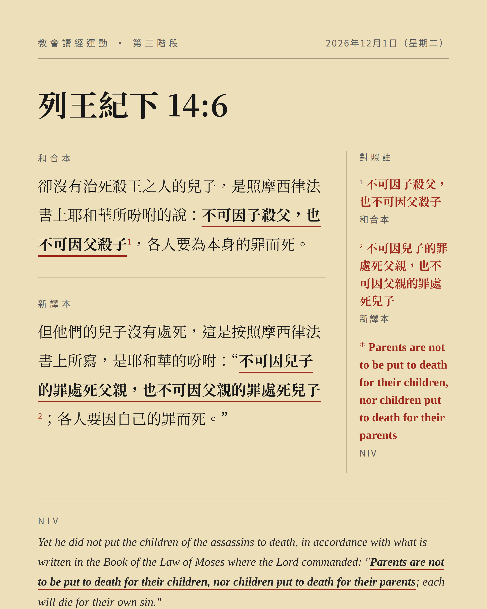

中文朗讀（新譯本）
English reading (NIV)
卻沒有治死殺王之人的兒子，是照摩西律法書上耶和華所吩咐的說：不可因子殺父，也不可因父殺子，各人要為本身的罪而死。
但他們的兒子沒有處死，這是按照摩西律法書上所寫，是耶和華的吩咐：“不可因兒子的罪處死父親，也不可因父親的罪處死兒子；各人要因自己的罪而死。”
"Yet he did not put the children of the assassins to death, in accordance with what is written in the Book of the Law of Moses where the Lord commanded: 'Parents are not to be put to death for their children, nor children put to death for their parents; each will die for their own sin.'"
亞瑪謝登基穩固之後，處決咗殺佢父王嘅臣僕，但按摩西律法書寫明嘅吩咐，冇處死佢哋嘅兒子。當時列國慣例係連坐滅門，亞瑪謝卻照住寫明嘅律法行。和合本將引文壓縮做「不可因子殺父，也不可因父殺子」，新譯本展開寫明「不可因兒子的罪處死父親，也不可因父親的罪處死兒子；各人要因自己的罪而死」。Constable 話呢個係本章記載亞瑪謝唯一嘅善行。
各人要為自己嘅罪負責，唔好將上一代嘅罪算喺下一代頭上；照住寫明嘅話去行，就算同當時慣例唔同。